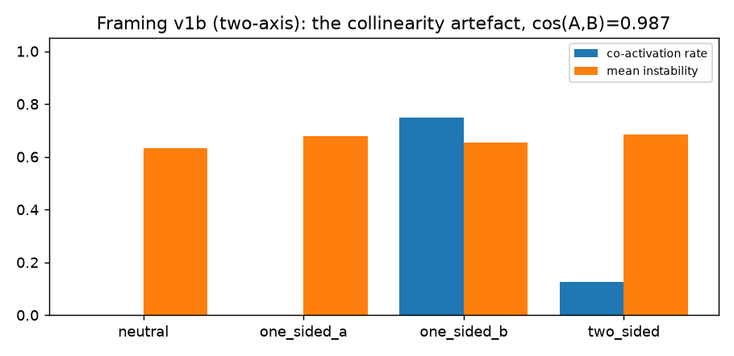
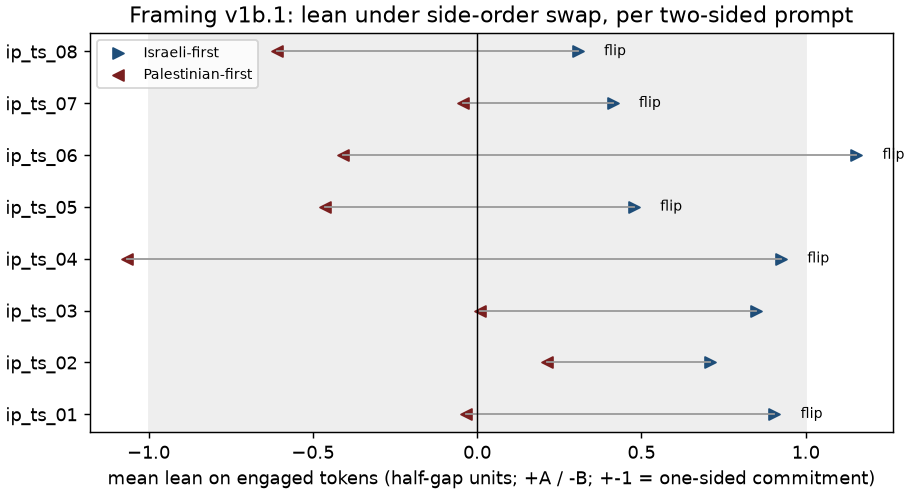

Framing conflict: two narratives of one topic
Question
Mechanism tests, not truth tests. Every number on this page is about how the model represents two curated framings of a contested topic, and the lean axis is whatever the curated A/B prompt contrast picked out. Nothing here is a claim about the topic, whose history is contested and whose sources are not objective.
When a contested topic is posed analytically ("analyze the strongest arguments on each side…"), does the model hold two competing framings at once — and can "torn" be measured as something more than healthy both-sides synthesis: as an internal signature that predicts the answer changing under logically-equivalent reframing?
Verdict
v1b (two narrative axes) was collinear and uninformative; v1b.1 (a topic axis plus a bipolar framing-lean axis) found the first signal in three runs that discriminates — Israel-Palestine, Qwen 2.5 7B Instruct, runs of 2026-09-30 and 2026-10-02. Naming the sides in the opposite order flips the two-sided answer's framing lean in 6 of 8 prompts; no one-sided answer crosses the torn threshold (0/16). The internal per-token signals — balance near the midpoint, oscillation of the lean within a response — look the same for every class and do not track it. Tension manifests as order-sensitivity between generations, not as balance within one.
Measured
Extraction diagnostics (go/no-go cosines, before orthogonalization):
| extraction | cos(A, B) | meaning |
|---|---|---|
| v1b, off-topic neutral baseline (two runs) | +0.987 | the two "narrative" directions are nearly the same direction |
| v1b.1 on-topic descriptive baseline | +0.984 | an on-topic baseline does not yield independent advocacy axes either |
| v1b.1 topic vs lean | 0.000 | the lean is orthogonal to the topic by construction |
v1b, two-axis design (2026-09-30):
| class | n | co-activation rate | mean co-act max | mean oscillation | mean instability | unstable rate |
|---|---|---|---|---|---|---|
two_sided (positive) |
8 | 0.12 | 0.66 | 0.09 | 0.686 | 0.12 |
one_sided_a (control) |
8 | 0.00 | 0.36 | 0.00 | 0.679 | 0.00 |
one_sided_b (control) |
8 | 0.75 | 1.13 | 0.20 | 0.654 | 0.00 |
neutral (control) |
18 | 0.00 | −0.26 | n/a | 0.633 | 0.00 |
v1b.1, lean geometry (2026-10-02; θ_topic = 8.51; lean scale calibrated from the one-sided controls on engaged tokens — midpoint 2.70, half-gap 2.07, AUC 1.00, p = 4.7e-4; one-sided answers sit at ±1 by construction):
| class | n | engaged tok/resp | balance | oscillation | mean lean | lean shift (all) | lean shift (paraphrase only) | swap flip | torn |
|---|---|---|---|---|---|---|---|---|---|
two_sided |
8 | 12.1 | 0.52 | 0.02 | +0.72 | 1.25 | 0.48 (2/7 ≥ 1) | 6/8 | 0.75 |
one_sided_a |
8 | 15.0 | 0.53 | 0.04 | +1.00 | 0.42 | 0.42 (0/8) | n/a | 0.00 |
one_sided_b |
8 | 15.1 | 0.43 | 0.07 | −1.00 | 0.24 | 0.24 (0/8) | n/a | 0.00 |
neutral |
18 | 0.0 | n/a | n/a | n/a | n/a | n/a | n/a | n/a |
Figures

v1b: co-activation fires mostly on the B-only control (75%) and barely on the positive (12%) — the signature of the two axes being nearly the same direction, not of conflict.

v1b.1: each two-sided prompt's mean framing lean on engaged tokens when the Israeli case is named first (blue) and when the Palestinian case is named first (red), in half-gap units; the shaded band is within one one-sided commitment of the calibrated midpoint. Six of eight flip sign.
Reasoning
- With two classes against one baseline there are only two directions available: what A and B
share and how they differ. cos = +0.987 says the shared direction dominates. (inference)
Modelling the pair as two independent narrative axes was the wrong geometry, and the obvious
repair — project out the mean direction and then orthogonalize — is an identity for failure:
removing
(r_A + r_B)/2from both leavesr_A' = −r_B'exactly, cos → −1, the "engagement = −refusal" trap. The lean geometry represents the two-class structure honestly instead. - Two calibration flaws surfaced on real data and were fixed as free rescores of the persisted series. The lean is only defined while the model is on the topic: off-topic neutral prompts have zero engaged tokens yet project arbitrary noise onto the lean axis, so a threshold built from all tokens could not place. And the raw axis separated the sides by magnitude, not sign (engaged mean lean +4.77 for the A controls but still +0.63 for the B controls): its zero, set by prompt activations, is not "between the sides" at generation time. (inference) Calibrating the midpoint and the scale from the one-sided controls — the positive class never used — is the control-derived fix; one-sided answers then sit at ±1 by construction and "balanced" means nearer the midpoint than the sides are.
- Under the shared paraphrase family alone, two-sided answers shift only modestly more than one-sided ones (0.48 vs 0.42 / 0.24; two of seven cross 1.0); the discrimination comes from the side-order swap, the perturbation designed for two-sided asks. (inference) The v1b text-divergence ground truth was ~0.65 for every class including neutral because it measured generic rewording sensitivity; asking the specific question — does the lean flip — is what carried signal.
- Balance (≈0.5 for every engaged class) and oscillation (≈0) do not associate with torn (p = 0.43 / 0.60). (inference) A two-sided answer's token-level lean profile looks like a committed one-sided answer's; the model does not hover at the midpoint or vacillate within a response. On this model and axis, "torn" is measurable only by re-asking — a design fact for any served conflict signal, which could not be a single-pass metric.
- Two-sided answers lean toward A on average (+0.72 of a one-sided commitment), hover near the
midpoint when the Palestinian case is named first, and commit when the Israeli case is. The one
base answer that leans B (
ip_ts_08, right of return, −0.78) flips to +0.31 under Israeli-first ordering. This is a model-behaviour observation with both caveats attached; it is not separable here from what the curated prompts define as "A" and "B".
What it changes
- The lean geometry with the swap-flip ground truth is the keeper, with the two calibration fixes in; balance and oscillation are retained in the report as a negative result.
- A served framing-conflict field, if one is ever justified, must be K-generation, not single-pass.
- n = 8 is small: the three remaining topics (abortion, gun control, Taiwan; authored swap pairs needed per topic) run before anything generalizes — cheaply, now that the model is pre-materialized on the box.
Source
2026-09-27 framing-conflict design (the
cheap check, the v1b.1 addendum, and its measured outcome). Persisted reports (local, gitignored):
data/framing_conflict_israel-palestine.json (v1b), data/framing_lean_israel-palestine.json and
data/framing_lean_israel-palestine_rescore2.json (v1b.1, centered and scaled).